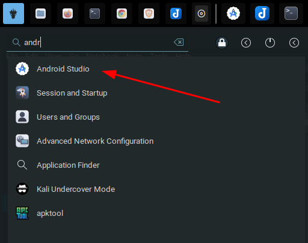
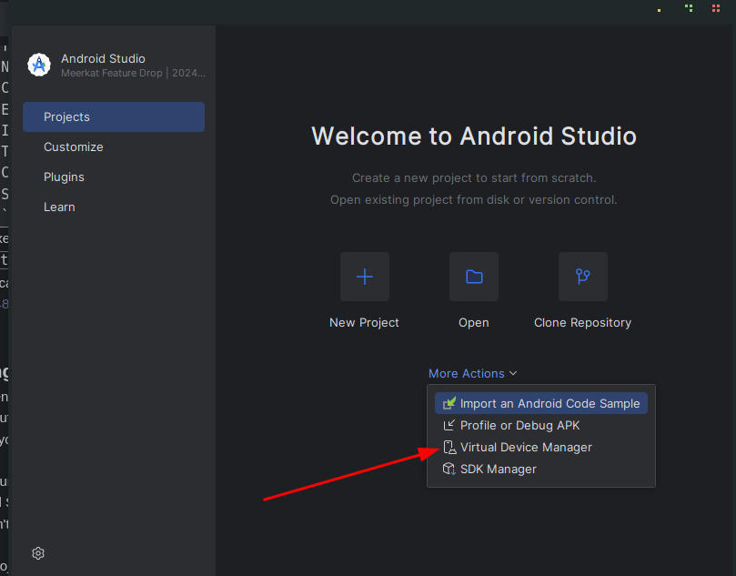
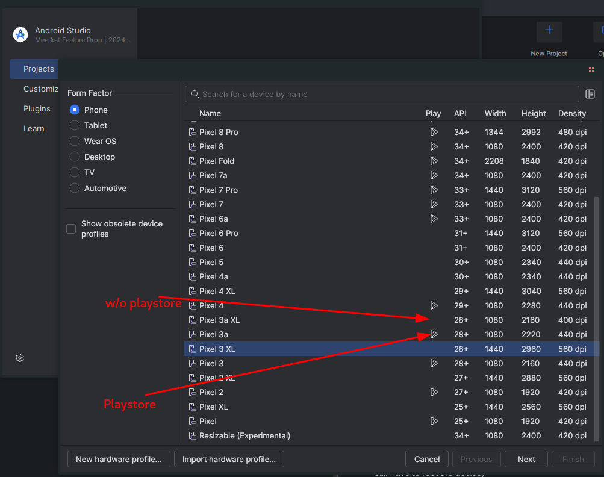
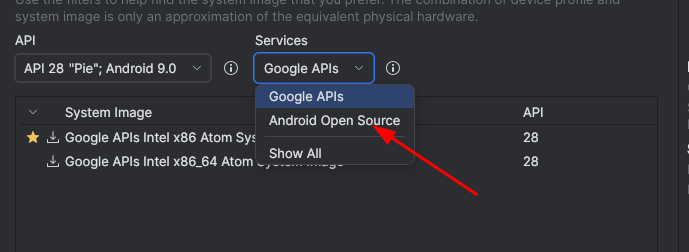
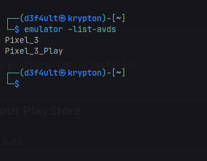
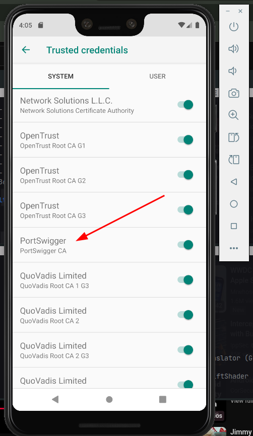
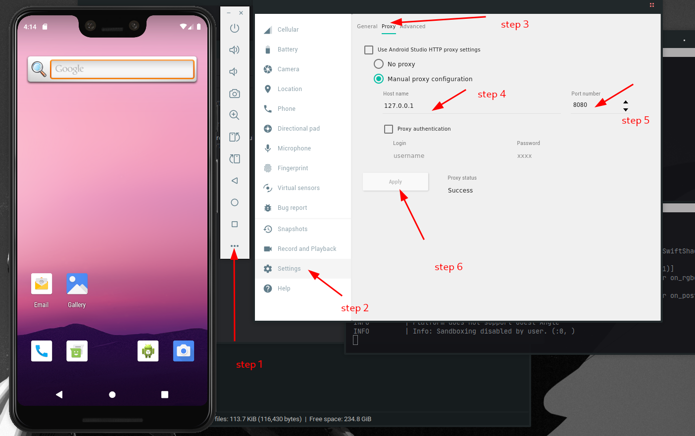
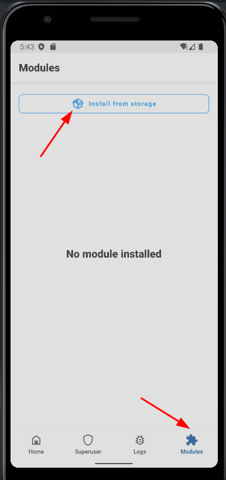

SETTING UP ANDROID HACKING ENVIRONMENT
With Android Studio
- Download Android Studio from the official developers website (about 1.3GB)
- Unzip the
tar.gzfile, and move fromdownloadsfolder toopt- Should be like this now
/opt/android-studio
- Should be like this now
- Launch android studio from the opt folder on your terminal:
/opt/android-studio/bin/studio - If you want to launch from the menu, follow these steps:
- Create a file:
sudo nano /usr/share/applications/android-studio.desktop - Paste this into the file:
[Desktop Entry] Version=1.0 Type=Application Name=Android Studio Comment=Official IDE for Android development Exec=/opt/android-studio/bin/studio %f Icon=/opt/android-studio/bin/studio.png Terminal=false Categories=Development;IDE; StartupWMClass=jetbrains-studio
- Make it executable:
chmod +x ~/.local/share/applications/android-studio.desktop - Now you can run it from your menu 
- Create a file:
Creating an Emulator
For Android Penetration testing, you would basically need two emulators, one with Play Store, another without. I personally use Android 9 (Pie) and Android 12 for my penetration testing, and I will walk you through how I set them up.
-
Launch Android Studio
- Open Android Studio.
- If a project isn't open yet, click "More Actions" > "Virtual Device Manager". 
- If you're in a project, go to Tools > Device Manager (formerly AVD Manager)
-
Open Device Manager
- View existing virtual devices
- Create a new one
Click on "Create Device", it is a
+icon -
Select Hardware Profile
- Pixel 7 / Pixel 6 / Pixel 4 – modern and Google-supported
- I personally use Pixel 3 and Pixel 4 (Lightweight, doesn't slow my system down)
- Select a device (e.g., Pixel 4) and click Next.
- For me I select one without the Play Store logo next to it, this comes rooted by default, but if you want to have Play Store on your emulator select the one with Play Store icon. (NB: you still have to root the device) 
-
Select a System Image
- I recommend Android 9 (when downloading without Play Store, API 28) and Android 12 (API 31+) when downloading with Play Store
- Make sure you switch
servicestoandroid open sourcewhen downloading for Android 9  - You can go with Google API if the device you are using has Play Store
- Choose a system image:
- x86_64 or arm64-v8a for modern emulators
- Recommended: x86_64 + Google APIs
- If not already downloaded:
- Click "Download" next to the version you want (e.g., API 34 - Android 14)
- Accept the license and wait for the download to finish
- Click Next when done.
Dependencies
sudo apt install emulator sudo apt install google-android-platform-tools-installer
Setting up Emulator without Play Store
- List all your available AVDs:
emulator -list-avds
- If it returns nothing, download the script to fix the issue, script, and run again.
- This should return all AVDs like the screenshot below 
- Launch your emulator:
emulator -avd Pixel_3
ChangePixel_3to what is listed in the AVD.
And you are good to go!
INSTALLING A CERTIFICATE (Burp Suite)
Android 9 (API 28)
- Launch the emulator:
emulator -avd <name of avd> -writable-system
- Start Burp Suite and export the certificate in .der format (e.g.
burpcert.der) and save. - Run these in the same folder where you saved the certificate, one after the other:
openssl x509 -inform DER -in burpcert.der -out burpcert.pem openssl x509 -inform PEM -subject_hash_old -in burpcert.pem | head -1 mv burpcert.pem <hash>.0 adb push <hash>.0 /sdcard/ adb root adb remount adb shell cd sdcard/ mv <hash>.0 /system/etc/security/cacerts/ cd /system/etc/security/cacerts chmod 644 <hash>.0
- Restart your emulator 
- Go to settings and set the proxy to 127.0.0.1, port 8080 or whatever you use as proxy 
And with that you can now proxy traffic with your emulator.
If the process is too long, just download the script here and run it (this is only tested on Android 9 API 28).
Rooting Android Emulator & Installing Burp Suite Certificate (Magisk + AlwaysTrustUserCerts)
This guide will walk you through rooting an Android emulator using rootAVD and installing a custom certificate (like Burp Suite’s CA) to intercept HTTPS traffic, which is critical for mobile app testing and pentesting workflows.
-
Launch and Prepare Your Android Emulator
- Tested on Android 12 (API Level 32), but should work for other versions too.
- Open Android Studio or your emulator manager.
- Launch an AVD (Android Virtual Device).
-
Clone and Use rootAVD to Root the Emulator
git clone https://gitlab.com/newbit/rootAVD.git cd rootAVD ./rootAVD.sh ListAllAVDs ./rootAVD.sh system-images/android-32/google_apis_playstore/x86_64/ramdisk.img
During the script execution, you'll see a prompt like:[s] (s)how all available Magisk Versions [1] local stable '26.4' (ENTER) [2] stable () [3] canary ()
- Type 1 and press Enter to install the local stable version of Magisk 26.4.
-
Verify Root Access with Magisk
- Open the Magisk app (automatically installed).
- Tap OK when prompted and allow it to reboot again.
- After reboot, verify root access:
adb shell su
- If prompted on the emulator, grant root access.
- You now have a rooted Android emulator!
Installing Burp Suite’s Certificate as a System Certificate
-
Install the AlwaysTrustUserCerts Module
- Download AlwaysTrustUserCerts v1.3: Download ZIP
- Push it to the emulator's internal storage:
adb push AlwaysTrustUserCerts_v1.3.zip /sdcard/
- In the emulator:
- Open the Magisk app.
- Go to Modules.
- Tap Install from storage.
- Select AlwaysTrustUserCerts_v1.3.zip.
- Follow the prompts and reboot.

-
Export and Install Burp Suite’s Certificate
- Go to Proxy → Options → Import / Export CA Certificate in Burp Suite.
- Export the certificate in DER format.
- Save it as burp.crt (must be .crt and named correctly).
- Push the certificate to the emulator:
adb push burp.crt /sdcard/
- On the emulator:
- Go to Settings → Security → Encryption & Credentials.
- Tap Install a certificate → CA Certificate.
- Select the burp.crt file from storage.
- Install
-
Final Step: Reboot for Certificate to Become a System Cert
- Close the emulator and reboot it.
- On startup, the AlwaysTrustUserCerts module will automatically promote user-installed certs (like Burp’s) to system-trusted certificates.
Final Test: Intercept HTTPS Traffic
- Start Burp Suite and set up the proxy listener (127.0.0.1:8080).
- Set the emulator’s Wi-Fi proxy to your host machine's IP and port 8080.
- Open a browser or test app on the emulator.
- If everything is correct, you should see HTTPS traffic being intercepted by Burp Suite without SSL errors.
Congratulations! You now have a fully rooted Android emulator with Burp Suite’s certificate installed as a system certificate, allowing you to intercept HTTPS traffic seamlessly.
← Back to Portfolio